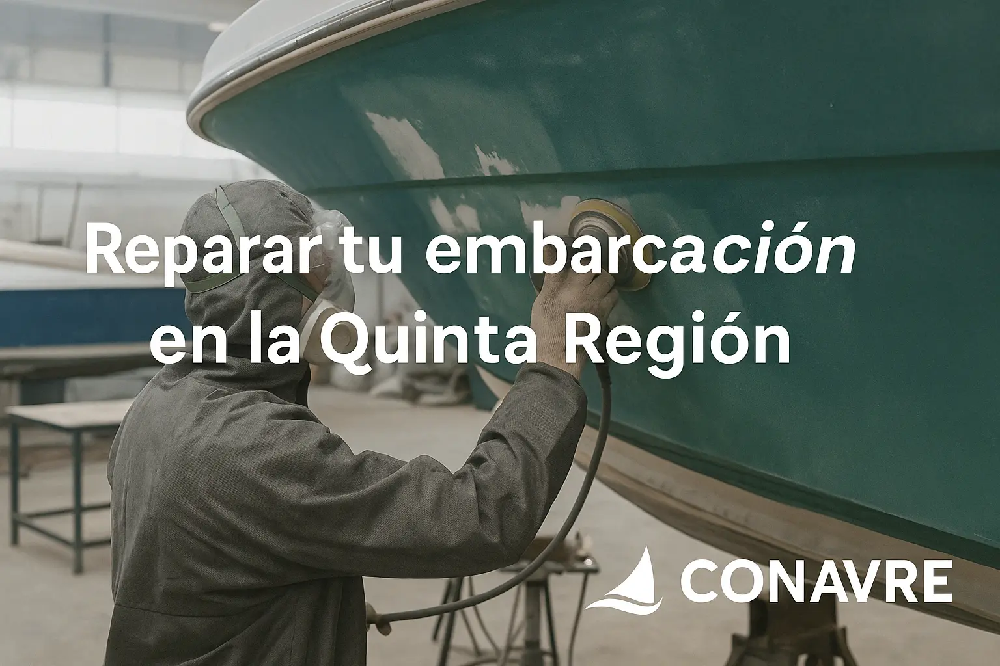

¿Cuándo y dónde reparar tu embarcación?
Publicado por CONAVRE | Abril 2025
Mantener tu embarcación en óptimas condiciones no es solo una cuestión de estética, sino de seguridad y durabilidad. En la Quinta Región, las condiciones marinas —salitre, corrientes y mareas— pueden acelerar el desgaste de cascos, cubiertas y sistemas internos. Reconocer las señales a tiempo y elegir el astillero adecuado es clave para prolongar la vida útil de tu nave y evitar costes mayores a futuro.
¿Por qué actuar rápido? Pequeñas fisuras en el casco, problemas de ósmosis, filtraciones o pintura levantada son síntomas de daños que, si se descuidan, pueden derivar en reparaciones estructurales costosas. Un mantenimiento oportuno no solo preserva el valor de tu embarcación, sino que también garantiza un rendimiento óptimo y tu tranquilidad en el agua.
¿Cuándo reparar tu embarcación?
Detectar el momento adecuado para una reparación puede ahorrarte tiempo y dinero a largo plazo. Estas son las señales más comunes que indican que tu barco necesita atención profesional:
- Filtraciones o humedad persistente en casco y cubierta: Si notas acumulación de agua en lugares donde antes permanecía seco, o zonas que tardan mucho en secarse tras un viaje, puede haber pequeñas grietas o un sellado deteriorado. Ignorar estos indicios puede derivar en daños internos más graves, como ósmosis o corrosión.
- Grietas, golpes o deformaciones tras colisiones o encallamientos: Cualquier impacto fuerte deja su huella. Incluso si parece superficial, el casco puede haber perdido rigidez o haber sufrido microfisuras que comprometan la integridad estructural. Una inspección temprana permite reforzar o reemplazar la zona afectada antes de que el problema se extienda.
- Desprendimiento de pintura o signos de ósmosis en la superficie: Ampollas en la pintura o pequeñas burbujas bajo la capa de gelcoat suelen ser síntomas de ósmosis, un proceso en el que el agua penetra y daña la fibra de vidrio. Reparar y volver a pintar a tiempo evita filtraciones más hondas y preserva el acabado estético.
- Fallo en componentes mecánicos o eléctricos (bombas, timones, etc.): Ruidos inusuales en la bomba de achique, timón duro de manejar o conexiones eléctricas con chispas indican desgaste o corrosión interna. Un diagnóstico preventivo de estos sistemas garantiza que nada falle en plena navegación.
- Revisión periódica cada 2–3 años desde la última intervención: Incluso sin síntomas aparentes, aconsejamos una revisión completa tras dos o tres temporadas intensivas. Esto incluye chequeo de cascos, juntas, herrajes, líneas de combustible y todos los sellos, para anticipar cualquier degradación antes de que sea visible.
Cómo elegir el taller adecuado
La elección del astillero o taller que reparará tu embarcación es tan importante como la propia intervención. Un taller bien seleccionado te garantizará resultados duraderos, seguridad y un buen retorno de tu inversión. Ten en cuenta estos aspectos:
-
Experiencia en materiales y técnicas:
No todos los talleres trabajan igual con fibra de vidrio, acero o madera marina. Comprueba que tengan trayectoria en tu tipo de casco y que utilicen técnicas adecuadas. -
Historial de proyectos y casos de éxito:
Solicita ver fotografías de embarcaciones reparadas por ellos. Un buen taller documenta sus trabajos y puede mostrar ejemplos de intervenciones complejas que hayan resuelto con éxito. -
Plazos realistas y transparencia:
Un cronograma con fases, fechas de inicio y fin y posibles márgenes de ajuste, demuestra profesionalismo. Presupuesto que incluya posibles costes adicionales (transportes, certificaciones, etc.). -
Garantías y cobertura post-reparación:
Más allá de la intervención inicial, valora si ofrecen garantías en estructura, pintura y sistemas mecánicos. Un buen taller suele incluir revisiones a precio preferencial tras la entrega, así como repuestos y asesoría técnica. -
Atención al cliente y comunicación:
La fluidez en la comunicación, la rapidez en responder tus consultas y la disposición a aclarar cada paso del proceso son indicadores de que el taller valora tu proyecto tanto como tú.
Beneficios de un taller profesional vs. hágalo usted mismo
- Experiencia y conocimientos: En un taller profesional cuentas con técnicos especializados y procedimientos estandarizados; en casa puedes encontrarte con falta de know-how en materiales y procesos.
- Calidad y acabados: Un taller garantiza espesores de laminado uniformes, curado controlado y pintado profesional; en modo “hágalo usted mismo” los resultados pueden ser desiguales y propensos a defectos.
- Tiempo y eficiencia: Los procesos coordinados en un astillero reducen plazos y evitan retrabajos; con DIY es fácil subestimar el tiempo necesario y prolongar la reparación.
- Seguridad y cumplimiento: Se aplican protocolos de seguridad, se usan EPP adecuados y se cumple con normativas marítimas; trabajando por cuenta propia existe mayor riesgo de accidentes y sanciones.
- Garantías y respaldo: Los talleres ofrecen garantías estructurales y de pintura; en reparaciones caseras no hay cobertura ni respaldo formal.
Preguntas Frecuentes
¿Cuándo debo programar la próxima revisión de mi embarcación?
En CONAVRE recomendamos una revisión general cada 12–18 meses, o tras temporadas de uso intensivo. Si notas grietas, filtraciones o cambios en la navegación, solicita una inspección a la brevedad.
¿Cuánto tiempo tarda una reparación típica?
Suelen tardar entre 2 y 6 semanas, según la extensión del daño y los trabajos adicionales (pintura, instalaciones, homologaciones). Te entregamos un cronograma personalizado al inicio.
¿Cómo se calcula el costo de la reparación?
Evaluamos magnitud de daños, materiales y horas de mano de obra. Enviamos un presupuesto detallado sin costo y solo facturamos lo aprobado.
¿Qué garantía ofrezco con mi embarcación reparada?
Todas las reparaciones incluyen 15 años de garantía estructural y 3 años en acabados de pintura marina. Además, puedes optar por un plan de mantenimiento preventivo.
¿Puedo hacer parte del mantenimiento yo mismo?
Sí, pero te aconsejamos dejar los trabajos críticos (casco, laminados, sistemas de gobierno) a nuestros especialistas para garantizar seguridad y evitar costos mayores por retrabajos. Podemos asesorarte en tareas menores.
En CONAVRE somos tu aliado en la reparación naval y el mantenimiento preventivo de embarcaciones en fibra de vidrio y acero. Atendemos proyectos en Quintero, Concón, Valparaíso y más, garantizando calidad y confianza en cada reparación.
📩 Cotiza tu reparación